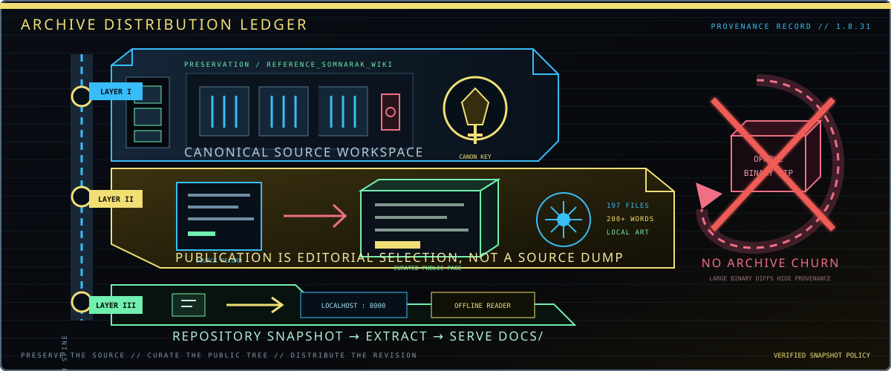

Archive Distribution Ledger
This project record explains how the Somnarak Wiki moves from preserved source material to a public encyclopedia and finally to an offline reader. It is not a second download center. The reader-facing controls remain on the Archive Download Center; this ledger records why those controls use GitHub’s revision-bound snapshot instead of an opaque, repeatedly regenerated package.

Three Layers, One Traceable Revision
Canonical source workspace
REFERENCE_SOMNARAK_WIKI/ stores the source corpus, placement research, audits, and binding standards. These files support editorial verification; they are not copied wholesale into unrelated public pages and are not required by the browser at runtime.
Curated public encyclopedia
docs/ contains the actual GitHub Pages site. Its HTML, CSS, JavaScript, JSON, maps, and artwork form the maintained public surface. Every published page must satisfy the 200-word editorial floor and remain correctly nested by subject.
Repository snapshot
GitHub creates an archive from a named branch when the reader requests it. That archive preserves the relationship between public pages, source records, and revision history without committing a fresh binary ZIP after every text or artwork change.
No Generated-Archive Churn
A rebuilt ZIP changes as one large binary even when only a sentence changes, obscuring useful diffs and increasing repository history. Release distribution therefore points to GitHub’s current branch snapshot. A separately packaged archive may be attached to a formal GitHub Release when one is intentionally versioned and verified, but it must not masquerade as the living source of truth.
Open the Public Tree Correctly
- Download and extract the repository snapshot.
- Enter the extracted project directory.
- Serve
docs/through a local HTTP server. - Open the reported local address and verify search and artwork paths.
python3 -m http.server 8000 --bind 0.0.0.0 --directory docs